Fase 5 · Jornada 36 · Así lo hacen en la realidad · Curso de robótica inteligente
Así lo hacen en la realidad I: los labs de robot learning en 2026
Cómo convierte un lab un método de las fases 3 y 4 en un robot que funciona fuera de la demo: de dónde salen los datos y cuánto cuestan, qué cómputo publican, cómo se evalúa con un número de ensayos que signifique algo, cómo se lee un vídeo, y qué enseña la conducción autónoma, el único despliegue masivo de autonomía aprendida.
Objetivos de R1a
Al terminar esta jornada deberías poder…
- Situar a los labs y empresas de robot learning de 2026 por lo que publican (pesos, código, datos, número de ensayos) y no por sus vídeos.
- Explicar la pirámide de datos con cifras publicadas y calcular cuánto cuesta y cuánto tarda recoger \(N\) demostraciones.
- Leer una tabla de latencias medidas y decidir si un modelo cabe en un robot y a qué frecuencia.
- Derivar cuántos ensayos hacen falta para distinguir dos tasas de éxito, qué garantiza «20 de 20» y el intervalo de Poisson de una tasa de accidentes, y aplicarlos a resultados publicados.
- Aplicar una lista de lectura a un vídeo o un anuncio y separar demo, piloto y producto.
- Explicar qué puede copiar un dron de la conducción autónoma y qué no, y por qué los drones casi no aparecen en estos labs.
Por qué importa
Las fases 3 y 4 te dieron los métodos; esta jornada mira qué hace falta alrededor
- A10, A12a, A12b y A8b explicaron π0, GR00T, Gemini Robotics, Helix, V-JEPA 2 o Cosmos como métodos. Aquí no se repiten: se cuenta lo que no sale en sus arquitecturas.
- Pregunta de la jornada: ¿cómo convierte un lab un método en un robot que funciona fuera de la demo, y cómo se sabe si lo ha conseguido?
- Cuatro partes la responden: los datos, el cómputo y el despliegue, la evaluación y la diferencia entre demo y producto. Luego, la conducción autónoma y los drones.
Historia
De una granja de brazos en 2016 a robotaxis sin conductor en quince ciudades
Parte 1
El mapa, con fechas y tamaños
Quién hace qué en noviembre de 2026, qué publica cada uno y dónde están los humanoides que se venden de verdad.
El mapa · quién hace qué
Cuatro tipos de actores, con lo último que ha publicado cada uno
Modelos y plataformas
Google DeepMind: Gemini Robotics 2 (07-2026) y 2.5 (10-11-2026), solo para socios .
NVIDIA: GR00T N1.7 abierto; GR00T 2 presentado en la CoRL (09-11-2026), con el código anunciado para diciembre; Cosmos 3; Isaac Lab 3.0 .
El «cerebro» para muchos robots
Physical Intelligence: de π0 a π0.7 (04-2026) .
Generalist: GEN-1, más de 500 000 h de datos humanos .
Skild AI: 1400 M$ y más de 14 000 M$ de valoración, según la empresa . Field AI usa Cosmos, según NVIDIA .
Los que venden robots
Figure (Helix, BMW), Agility (Digit en GXO), Boston Dynamics (Atlas), Apptronik (Apollo), 1X (NEO).
Unitree y AgiBot, en China, venden miles al año.
Tesla (Optimus): sin fuentes primarias accesibles en 2026; sale en la parte 5.
Lo barato, lo abierto y lo independiente
Stanford, Berkeley, CMU, MIT, TRI y otros ponen los sistemas de recogida baratos (ALOHA, UMI), los datasets abiertos (OXE, DROID) y la evaluación independiente (RoboArena).
ETH y UZH, con los drones y las patas: en R1b, A6a y A6b.
El mapa · qué publica cada uno
Pesos, código, datos y número de ensayos, a 12 de noviembre de 2026
Para tu tesis, lo que se puede reproducir pesa más que lo que se anuncia: con pesos y código se mide; con un vídeo, no.
El mapa · humanoides
Atlas: de robot de concurso en 2013 a producto con cliente en 2026
- 08-2025, con TRI: una política de 450 M de parámetros controla todo Atlas; las imágenes llegan a 30 Hz y cada trozo de 48 acciones cubre 1,6 s, del que se ejecutan 24. Los datos se recogen teleoperando con gafas de RV sobre el MPC del robot .
- 01-2026, en el CES: versión de producción con 56 grados de libertad, 50 kg de carga y cambio autónomo de batería; funciona en modo autónomo, teleoperado o con tableta. Toda la producción de 2026 va al centro de Hyundai y a Google DeepMind, que pone Gemini Robotics .
- 09-2026: abre el centro de aplicación de Hyundai en Savannah con un plan de 25 000 unidades «en los próximos años». El pie de foto oficial: «A trainer teleoperates Boston Dynamics Atlas robot» .
- Apptronik hace lo mismo al revés: Apollo 2 es el humanoide de las pruebas de Gemini Robotics 2 y 2.5 .
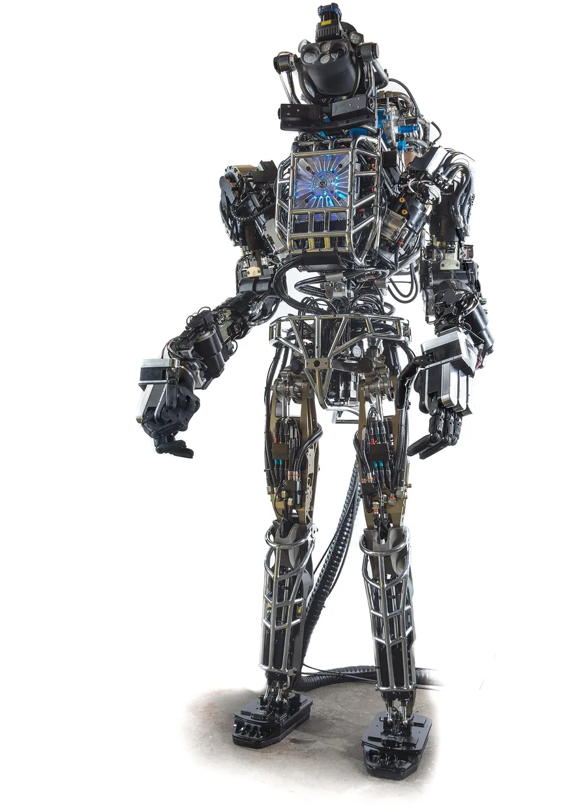
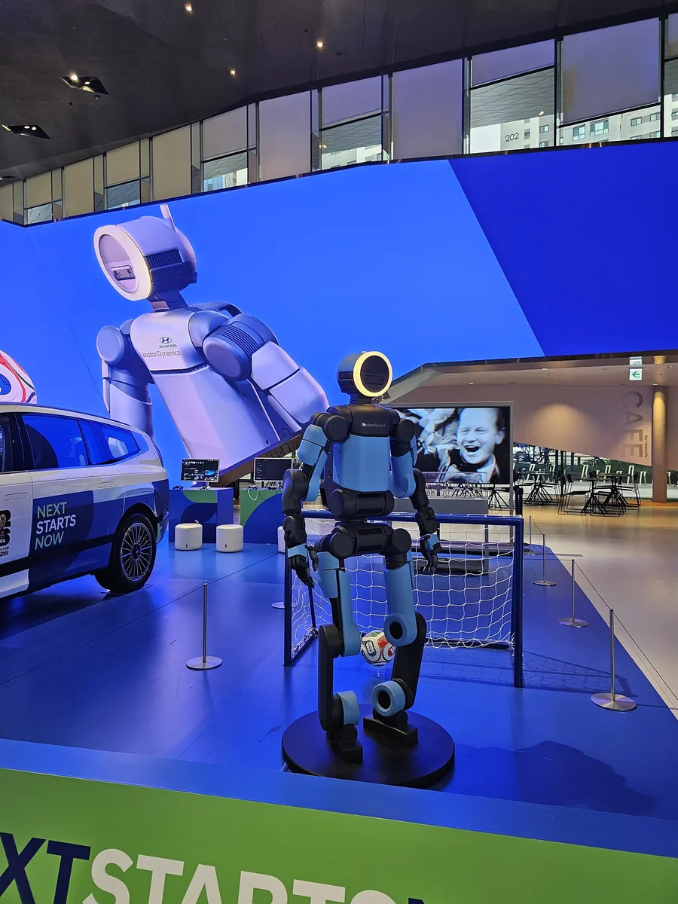

.jpg){kind=link}
El mapa · escala
Los humanoides que más se venden son chinos; los robots que más trabajan, de almacén
- Unitree, según el folleto de su salida a bolsa: más de 5500 humanoides enviados en 2025 (sin contar los de ruedas) y 5632 vendidos entre 2023 y 2025, además de 33 294 cuadrúpedos. No se contradicen: una cifra es de envíos en un año y la otra de ventas en tres .
- AgiBot publica AgiBot World: 1 003 672 trayectorias de 100 robots, y su modelo GO-1 en abierto .
- NVIDIA elige un Unitree H2 como humanoide de referencia para universidades, con un Jetson AGX Thor de 40–130 W .
- Amazon desplegó su robot un millón en 2025, en más de 300 centros: robots móviles de almacén, no humanoides . Es la flota más grande, y su modelo fundacional (DeepFleet) coordina tráfico, no manipula.
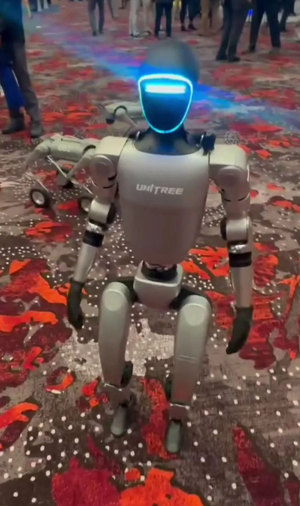
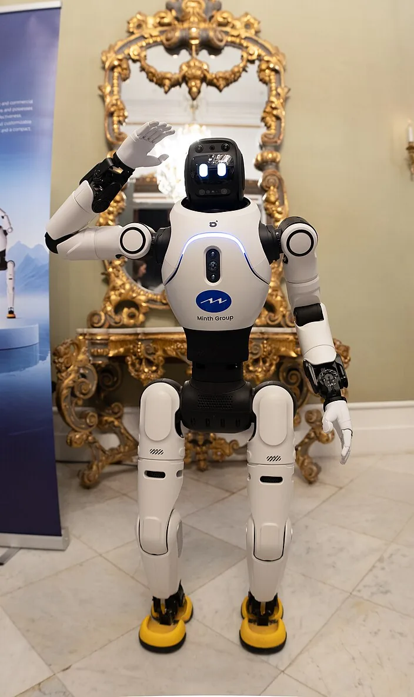


Parte 2
Los datos: la parte cara
Teleoperación, flotas, vídeo humano y simulación; la pirámide con cifras publicadas, y cuánto cuesta y cuánto tarda recoger \(N\) demostraciones.
Los datos · notación
Qué es cada símbolo en la cuenta del coste de los datos
| Símbolo | Qué es | Ejemplo |
|---|---|---|
| \(N\) | Demostraciones útiles que quieres tener (episodios que acaban bien y se guardan) | 10 000 |
| \(r\) | Ritmo: demostraciones útiles por hora y operador, contando reinicios, colocar objetos y fallos | 35/h con teleoperación; 111/h con UMI (medidos) |
| \(R\) | Puestos de recogida que trabajan a la vez, cada uno con un operador | 10 |
| \(h\) | Horas de recogida por día y puesto | 8 (supuesto) |
| \(H_{\mathrm{op}}\), \(D\) | Horas de operador que se pagan; días de calendario hasta tener las \(N\) | salen de la cuenta |
| \(c_o\) | Coste de una hora de operador | 30 US$/h (supuesto, no publicado) |
| \(C_R\), \(A\) | Coste del equipo de un puesto y días en que se amortiza | ALOHA < 20 000 US$; 500 días (supuesto) |
| \(C\) | Coste total: operadores más la parte del equipo que se gasta en esos días | sale de la cuenta |
«Supuesto» quiere decir que el curso pone el número porque ningún lab lo publica. El script (figuras/ejemplos_r1a.py) los marca igual.
Los datos · recogerlos
Tres formas de recoger demostraciones, medidas en la misma tarea
- Lo que cuesta el equipo: ALOHA, menos de 20 000 $ ; Mobile ALOHA, 32 000 $ con alimentación y cómputo ; la pinza de UMI, 73 $ de materiales más 298 $ de cámara .
- Lo que rinde: UMI va más de 3 veces más rápido que la teleoperación y a un 48 % de la mano; lanzando objetos, la teleoperación no logró ni una demostración válida en 15 minutos .
- Lo que vale cada dato: cuanto más rápido, más lejos del robot. Por eso la pirámide (dos hojas más allá) junta las tres.
Los datos · flotas y datasets abiertos
DROID, Open X-Embodiment y AgiBot World: lo que se puede descargar
- Open X-Embodiment (2023–2024): 22 robots, 21 instituciones, 527 habilidades en 160 266 tareas .
- DROID (2024): 76 000 trayectorias o 350 h, 564 escenas, 84 tareas, 50 recolectores en Norteamérica, Asia y Europa durante 12 meses, con la misma estación en 13 instituciones .
- AgiBot World (2025): 1 003 672 trayectorias de 100 robots, en 217 tareas y cinco escenarios; licencia no comercial .
- RT-1 (2022) ya necesitó 13 robots y 17 meses para 130 000 episodios .
lerobot/droid_1.0.1) tiene 95 658 episodios porque incluye los fallidos (lleva el campo is_episode_successful). El laboratorio cuenta con los metadatos de cada copia.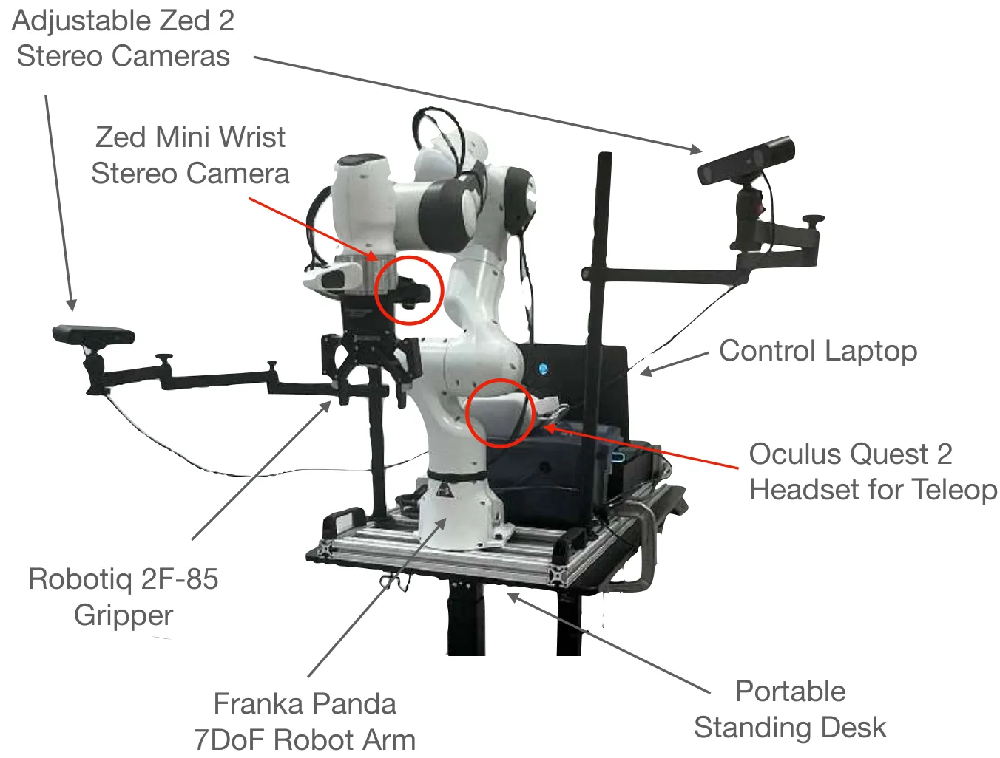
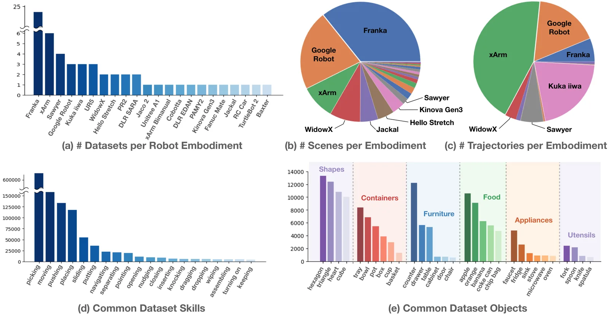
Los datos · vídeo humano
La base de la pirámide crece mil veces más deprisa que la cima
Los datos · sintéticos
Simulación y vídeo generado: el piso de en medio
- GR00T N1 generó 780 000 trayectorias de simulación, «equivalent to 6,500 hours» de demostración humana, en 11 h (según NVIDIA).
- Multiplicó sus 88 h de teleoperación por unas 10 con vídeo generado: unas 827 h, que costaron unas 105 000 horas de GPU L40 en 3600 GPU . DreamGen y Cosmos están en A8b y T1b .
- Skild AI dice entrenar con «trillions of synthetic experiences» y un modelo probado en simulación con 100 000 cuerpos distintos ; no publica ensayos reales con \(n\).
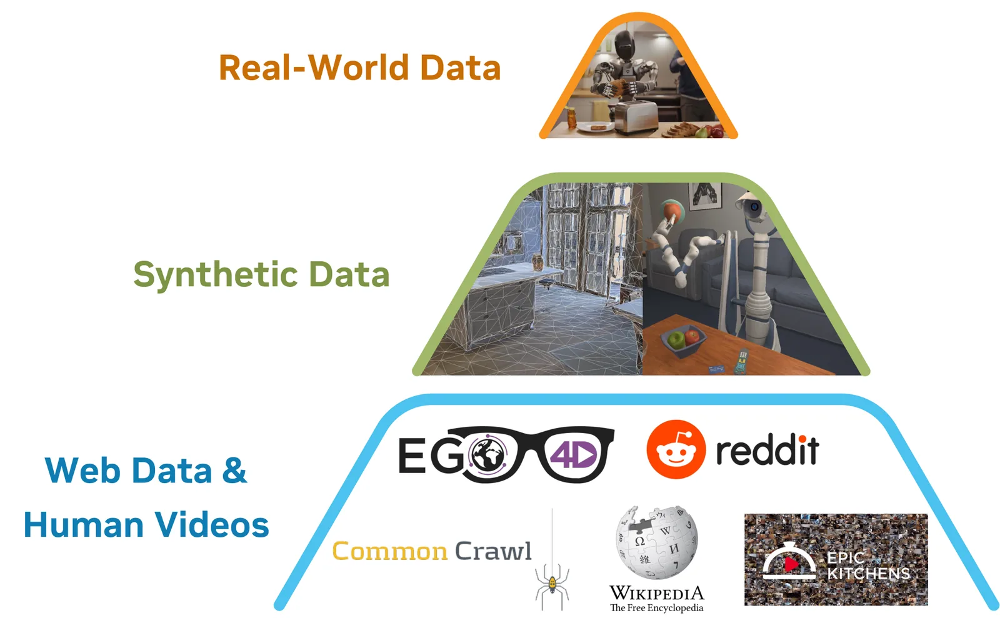
Los datos · la pirámide con cifras
De 88 horas de robot propio a un millón de horas de vídeo
figuras_r1a.py). «(E)»: cifra que solo da la empresa. OXE y AgiBot World no dan horas, solo trayectorias.Entre la cima (88 h de un robot propio) y la base (un millón de horas de vídeo) hay cuatro órdenes de magnitud. En 20 meses, la cima de NVIDIA pasó de 88 h (GR00T N1, 03-2025) a 23 500 h de teleoperación (GR00T 2, 11-2026), según la empresa . Para un dron, la cima casi no existe: no hay flotas de teleoperación aérea (parte 7).
Los datos · la cuenta del coste · derivación
Cuánto tarda y cuánto cuesta recoger \(N\) demostraciones
| # | Paso | Por qué |
|---|---|---|
| 1 | un puesto da \(r\) demostraciones por hora | \(r\) ya incluye reinicios y fallos (así se midió en UMI) |
| 2 | \(R\) puestos durante \(h\) horas dan \(rRh\) al día | los puestos trabajan en paralelo e independientes |
| 3 | \(D = \dfrac{N}{rRh}\) | días hasta acumular \(N\) |
| 4 | \(H_{\mathrm{op}} = R\,h\,D = \dfrac{N}{r}\) | cada puesto lleva un operador; \(R\) se cancela |
| 5 | equipo: \(R\,C_R\,\dfrac{D}{A}\) | se gasta la fracción \(D/A\) de su vida útil |
| 6 | \(C = c_o\dfrac{N}{r} + R\,C_R\dfrac{D}{A}\) | suma de las dos partes |
Los datos · la cuenta del coste · ejemplo
10 000 demostraciones: unas 290 h de operador teleoperando y 90 h con UMI
| Método | \(r\) | \(H_{\mathrm{op}}\) | \(D\) (\(R = 10\)) | \(C\) |
|---|---|---|---|---|
| teleoperación (equipo tipo ALOHA) | 35/h | 285,7 h | 3,57 días | ≈ 10 000 US$ |
| pinza UMI (371 US$) | 111/h | 90,1 h | 1,13 días | ≈ 2700 US$ |
| mano humana | 231/h | 43,3 h | 0,54 días | ≈ 1300 US$ |
Teleoperación, paso a paso: \(H_{\mathrm{op}} = 10\,000/35 = 285{,}7\) h; \(D = 10\,000/(35 \cdot 10 \cdot 8) = 3{,}57\) días; operadores \(30 \cdot 285{,}7 = 8571\) US$; equipo \(10 \cdot 20\,000 \cdot 3{,}57/500 = 1429\) US$; total \(\approx 10\,000\) US$, 1 US$ por demostración.
\(c_o\), \(h\) y \(A\) son supuestos del curso; \(r\) y los precios del equipo, publicados. Script: ejemplos_r1a.py, apartado 1.
Parte 3
Entrenar y desplegar
El cómputo que se publica (casi ninguno), el ciclo en que el despliegue alimenta el entrenamiento, y la latencia medida de un modelo de 3000 millones de parámetros en la GPU de un robot.
Entrenar · cómputo publicado
Solo un lab de los grandes dice cuánto cómputo gastó: NVIDIA, con GR00T N1
| Qué | Publicado | Cuenta |
|---|---|---|
| Preentrenar GR00T-N1-2B | ≈ 50 000 horas de H100; hasta 1024 GPU por modelo | \(50\,000/1024 = 48{,}8\) h de reloj, unos 2 días |
| Generar ≈ 827 h de vídeo | ≈ 105 000 horas de L40 en 3600 GPU | 29,2 h de reloj; 127 horas de GPU por hora de vídeo |
| Simulación | 6500 h equivalentes en 11 h | 591 veces el tiempo real |
Fuente: Bjorck et al. (2025), §2.3 y §3.2 . A 2 US$ la hora de H100 (supuesto, precio de alquiler orientativo), el preentrenamiento serían unos 100 000 US$: barato frente a los datos.
Desplegar · el ciclo de datos
El despliegue alimenta el entrenamiento: el «volante» de los datos
- Physical Intelligence (π*0.6): por iteración, 300 trayectorias en cuatro robots doblando ropa; 600 autónomas y 360 con intervenciones montando cajas; las correcciones del teleoperador cuentan como ejemplos buenos. Resultado: 13 h seguidas haciendo café, según la empresa . El método (RECAP) está en A12b.
- 1X: el «Expert Mode» de NEO deja que un operador de la empresa supervise a distancia lo que el robot no sabe hacer ; Redwood aprende de éxitos y fallos .
- Waymo: el mismo modelo base alimenta el conductor, el simulador y un «crítico» que busca casos difíciles .
Desplegar · latencia · notación
Cuánto tarda el modelo, cada cuánto actúa el robot y cuántas acciones hay que guardar
| Símbolo | Qué es | Ejemplo |
|---|---|---|
| \(\delta\) | Latencia de una llamada completa al modelo (de la imagen a las acciones) | 149 ms en Jetson Orin |
| \(f_{\mathrm{inf}} = 1/\delta\) | Frecuencia máxima de inferencia si se llama en cuanto acaba | 6,7 Hz |
| \(f_a\) | Frecuencia a la que el robot ejecuta acciones | 50 Hz (π0), 30 Hz (Atlas) |
| \(H\), \(N_{\mathrm{ejec}}\) | Acciones de un trozo y cuántas se ejecutan antes de pedir otro | 48 y 24 (Atlas) |
La condición de A12b: mientras el modelo piensa, el robot sigue con el trozo viejo, que no se puede acabar antes: \(\delta \le N_{\mathrm{ejec}}/f_a\), es decir, \(N_{\mathrm{ejec}} \ge \delta f_a\).
Ejemplo: con 149 ms y 50 Hz, \(N_{\mathrm{ejec}} \ge 0{,}149 \cdot 50 = 7{,}45\): al menos 8 acciones. Con 76,8 ms (Thor), al menos 4.
Gemini Robotics: un modelo grande en la nube y un decodificador en el robot, ≈ 250 ms de extremo a extremo (A12b) .
π0 en una RTX 4090: 73 ms a bordo y 86 ms fuera, de los que 13 ms son la wifi; ejecuta 25 acciones (0,5 s) entre llamadas .
Waymo: «the autonomous system operates entirely onboard», con un chip propio de más de 1000 TOPS (según Waymo).
1X: Redwood, 160 M de parámetros a ≈ 5 Hz en la GPU de NEO .
Desplegar · el dato central
GR00T N1.7 medido en seis GPU: de 23 ms en una H100 a 149 ms en un Jetson Orin
- Hasta la CoRL, el único VLA con latencias medidas y con método en la GPU de un robot: 3000 M de parámetros, pesos abiertos. El 09-11-2026 se sumó GR00T 2 Turbo, un «world action model» de 2000 M o menos (dos fuentes de NVIDIA no coinciden): 124 ms en el Thor de un G1, mediana de 500 .
- Compilar importa: TensorRT es 2,4 veces más rápido que PyTorch sin compilar en Orin y 4,4 en H100; en GR00T 2 Turbo, optimizar da 5,8 en Thor.
- Con NVFP4, Thor baja a 35,6 ms: \(1/0{,}0356 = 28{,}1\) Hz, los «~28 Hz» del README; la RTX Pro 6000, 24,7 ms = 40,5 Hz, sus «~40 Hz».
Desplegar · parámetros frente a frecuencia
Los modelos de miles de millones deciden a 5–45 Hz; los rápidos son pequeños
figuras/datos/cifras.json.- Nada por encima de 1000 M de parámetros pasa de unos 45 Hz, y eso en una H100. En la GPU de un robot, de 6,7 a 28 Hz.
- Lo que corre a 200 Hz es pequeño: el S1 de Helix tiene 80 M . El LBM de Atlas (450 M) da acciones a 30 Hz, pero ejecuta 24 de cada trozo de 48: decide cada 0,8 s .
- Por eso todos usan dos niveles o trozos de acciones (A12b): el modelo grande decide despacio y algo pequeño, o el trozo, mantiene el ritmo.
Parte 4
Evaluar: cómo se sabe que funciona
Cuánto dice una tasa de éxito con su \(n\), cuántos ensayos hacen falta para separar dos políticas, qué garantiza «20 de 20», y cómo evalúan TRI, RoboArena y los world models.
Evaluar · notación
Qué es cada símbolo en esta parte
| Símbolo | Qué es | Ejemplo |
|---|---|---|
| \(n\), \(k\) | Ensayos (episodios) de una política y cuántos acaban bien | π0: \(n = 10\) por tarea |
| \(p\), \(\hat p = k/n\) | Tasa de éxito verdadera (desconocida) y la observada | 8/10 = 0,8 |
| \(\mathrm{SE}\) | Error típico de \(\hat p\): cuánto varía de una tanda de \(n\) ensayos a otra | 0,126 con \(n = 10\), \(p = 0{,}8\) |
| \(\alpha\) | Probabilidad de declarar una diferencia que no existe (error de tipo I) | 0,05 |
| \(\beta\), \(1-\beta\) | Probabilidad de no ver una diferencia que sí existe; \(1-\beta\) es la potencia | \(1-\beta = 0{,}8\) |
| \(z_q\) | Cuantil \(q\) de la normal estándar | \(z_{0{,}975} = 1{,}960\); \(z_{0{,}8} = 0{,}842\) |
| \(p_1\), \(p_2\), \(\bar p\), \(\Delta\) | Tasas de dos políticas, su media y su diferencia \(\Delta = p_2 - p_1\) | 0,6; 0,7; 0,65; 0,1 |
| \(p_L\) | Cota inferior de \(p\) al nivel \(1-\alpha\) cuando no hubo ningún fallo | 0,861 con 20 de 20 |
\(n\) es siempre el número de ensayos por política. El intervalo de Wilson se derivó en T1b; aquí se aplica.
Evaluar · el problema
Una tasa de éxito sin su \(n\) no es un dato
| # | Paso | Por qué |
|---|---|---|
| 1 | cada ensayo: éxito con prob. \(p\); media \(p\), varianza \(p(1-p)\) | variable de Bernoulli |
| 2 | \(\mathbb E[k] = np\), \(\mathrm{Var}[k] = np(1-p)\) | suma de \(n\) independientes (binomial) |
| 3 | \(\mathrm{Var}[\hat p] = p(1-p)/n\) | \(\hat p = k/n\): dividir por \(n\) divide la varianza por \(n^2\) |
| 4 | \(\mathrm{SE} = \sqrt{p(1-p)/n}\) | raíz de la varianza; baja como \(1/\sqrt n\) |
| 5 | \(\hat p \pm z_{0{,}975}\,\mathrm{SE}\) | con \(n\) grande, \(\hat p\) es casi normal (TCL) |
Con 8 de 10: \(\mathrm{SE} = \sqrt{0{,}8 \cdot 0{,}2/10} = 0{,}126\) y \(0{,}8 \pm 1{,}96 \cdot 0{,}126 = [0{,}55;\ 1{,}05]\): pasa de 1. Con \(\hat p\) cerca de 1 y \(n\) pequeño, la normal falla; por eso se usa Wilson (T1b) .
Evaluar · Wilson aplicado
«96 %» puede ser cualquier cosa entre el 81 % y el 99 %: depende de \(n\)
ejemplos_r1a.py, apartado 4.- π0 evalúa con 10 episodios por tarea y método : un 8 de 10 deja \(p\) entre 0,49 y 0,94.
- π0.7 compara su política con 10 teleoperadores expertos, 3 intentos cada uno: 30 ensayos humanos (80,6 % de éxito); el \(n\) de la política no se publica . Con 24 de 30, el intervalo humano ya va de 0,63 a 0,90.
- Gemini Robotics 2.5 anuncia un 96 % empaquetando piezas con el Apollo 2 de Apptronik en Mercedes-Benz, sin \(n\) ni duración : con \(n = 25\), [0,81; 0,99]; con \(n = 500\), [0,94; 0,97].
Evaluar · cuántos ensayos · derivación
De dónde sale el número de ensayos para separar dos políticas
| # | Paso | Por qué |
|---|---|---|
| 1 | \(\hat\Delta = \hat p_2 - \hat p_1\), con \(n\) ensayos por política | estimador de la diferencia |
| 2 | si \(p_1 = p_2 = \bar p\): \(\sigma_0^2 = 2\bar p(1-\bar p)/n\) | varianzas de dos \(\hat p\) independientes que se suman |
| 3 | se declara diferencia si \(|\hat\Delta| > z_{1-\alpha/2}\,\sigma_0\) | falsa alarma con prob. \(\alpha\) (test bilateral) |
| 4 | si la diferencia es \(\Delta\): \(\hat\Delta \approx \mathcal N(\Delta, \sigma_1^2)\), \(\sigma_1^2 = \frac{p_1(1-p_1)+p_2(1-p_2)}{n}\) | cada \(\hat p\) con su varianza verdadera |
| 5 | potencia \(1-\beta\): \(\Delta - z_{1-\alpha/2}\sigma_0 = z_{1-\beta}\,\sigma_1\) | el umbral queda \(z_{1-\beta}\) desviaciones por debajo de \(\Delta\) |
| 6 | \(n = \dfrac{\big(z_{1-\alpha/2}\sqrt{2\bar p(1-\bar p)} + z_{1-\beta}\sqrt{p_1(1-p_1)+p_2(1-p_2)}\big)^2}{\Delta^2}\) | se multiplica por \(\sqrt n\) y se despeja |
Ejemplo (\(p_1 = 0{,}6\), \(p_2 = 0{,}7\), \(\alpha = 0{,}05\), potencia 0,8):
\(\bar p = 0{,}65\); \(1{,}960\sqrt{2 \cdot 0{,}65 \cdot 0{,}35} = 1{,}322\); \(0{,}842\sqrt{0{,}24 + 0{,}21} = 0{,}565\)
\(n = \dfrac{(1{,}322 + 0{,}565)^2}{0{,}1^2} = \dfrac{3{,}559}{0{,}01} = 355{,}9\)
Script: ejemplos_r1a.py, apartado 5.
Evaluar · cuántos ensayos · resultado
Con 50 ensayos solo se ven diferencias de unos 28 puntos
- NVIDIA lo escribe en GR00T 2 (11-2026): con hasta 20 ensayos por tarea ve las diferencias grandes, «but not the differences that matter in deployment»; separar 95 % de 99 % pide «about 285 trials per policy». Con la fórmula de la hoja anterior, 284,3 .
- TRI usa 50 por tarea, política y condición : alrededor del 50 %, la diferencia mínima que se detecta así es de 27,7 puntos. Por eso suman muchas tareas y comparan por grupos.
- 1X lo dice con sus palabras: para un solo checkpoint hacen falta «hundreds to thousands of samples» para tener métricas significativas .
- Figure da 9 % frente a 56 % sin \(n\) : con 8 ensayos por brazo ya daría \(z = 2{,}0\). Ahí falta comprobarlo, no potencia.
Evaluar · la regla del tres
«20 de 20» solo garantiza un 86 %: la regla del tres
| # | Paso | Por qué |
|---|---|---|
| 1 | \(P(n \text{ éxitos} \mid p) = p^n\) | \(n\) ensayos independientes, ninguno falla |
| 2 | \(p_L\) cumple \(p_L^{\,n} = \alpha\) | por debajo de \(p_L\), ver \(n\) de \(n\) tendría prob. menor que \(\alpha\): se descarta |
| 3 | \(p_L = \alpha^{1/n}\) | cota exacta (Clopper–Pearson con \(k = n\), unilateral) |
| 4 | \(p_L = e^{\ln\alpha/n} \approx 1 + \dfrac{\ln\alpha}{n}\) | \(e^x \approx 1 + x\) si \(x\) es pequeño (\(n\) grande) |
| 5 | \(-\ln 0{,}05 = 2{,}996 \approx 3\) | al 95 % |
| 6 | \(p_L \approx 1 - \dfrac{3}{n}\) | la regla del tres |
| Resultado | \(\alpha^{1/n}\) | \(1-3/n\) |
|---|---|---|
| 20 de 20 | 0,861 | 0,850 |
| 30 de 30 | 0,905 | 0,900 |
| 86 seguidas (GEN-1) | 0,966 | 0,965 |
| 300 de 300 | 0,990 | 0,990 |
Para afirmar \(p \ge 0{,}99\) sin fallos: \(\ln 0{,}05/\ln 0{,}99 = 298{,}1\), es decir, 299 ensayos seguidos (300 con la regla).
R1b usa la misma regla en su versión por horas (\(3/T\)) para fallos de una flota de drones.
Evaluar · el estándar de TRI
Cómo evalúa TRI sus Large Behavior Models: a ciegas, en orden aleatorio y con 50 por celda
Ciego y aleatorizado
«The evaluators did not know which policy was being tested»; en cada condición inicial, las políticas se prueban en orden aleatorio. 50 ensayos reales por tarea, política y condición; 200 en simulación .
Bayes y letras
Posterior Beta con prior uniforme para cada tasa; test secuencial para éxitos y de Welch para el progreso; corrección de Bonferroni; y letras: dos políticas sin letra en común difieren con un 95 % de confianza.
Revisar al que puntúa
Una segunda persona revisa el 27 % de los ensayos: 2,31 % de discrepancia en el éxito y 6,25 % en las preguntas de la rúbrica. Una incoherencia del propio artículo: 1800 ensayos reales en el resumen y «nearly 2,700» en la revisión.
Evaluar · RoboArena
RoboArena: evaluación repartida entre siete universidades, a ciegas y por parejas
- En vez de una tarea fija, cada evaluador elige su escena y su tarea, y prueba dos políticas a ciegas: da una puntuación de progreso, una preferencia y una explicación .
- Las preferencias se juntan con un modelo de Bradley–Terry ampliado con la dificultad de cada tarea.
- Primera tanda: 7 políticas generalistas, 7 universidades, 612 comparaciones por parejas y 4284 episodios con el robot de DROID.
- En su análisis con cambios de distribución simulados, la correlación con la clasificación de referencia es \(r = 0{,}838\), frente a 0,692 de la evaluación convencional; y la clasificación se estabiliza en unas 100 comparaciones.
- En la GTC (03-2026), NVIDIA dijo que GR00T N2 era el primero de RoboArena : una tabla independiente ya sirve de argumento comercial.
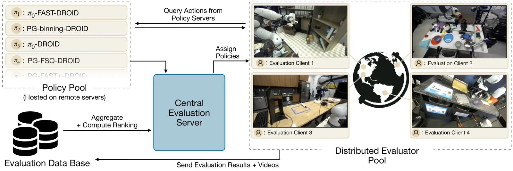
Evaluar · world models como evaluadores
Evaluar en un world model: rápido, pero hay que medir cuánto se equivoca
- 1X entrena un modelo de vídeo que predice qué hará NEO con unas acciones y si la tarea acabará bien. Lo usa para elegir checkpoints, arquitecturas y casos difíciles de producción .
- Su cifra: con un 70 % de acuerdo con la realidad, el modelo elige la mejor de dos políticas un 90 % de las veces cuando la diferencia real es de 15 puntos (según 1X).
- Su motivo: evaluar una política de humanoide en casas lleva «days to weeks», y un sistema automático real como AutoEval llega a unos 850 episodios al día, según el mismo informe.
- Google DeepMind evalúa Gemini Robotics en un simulador basado en Veo , y Waymo genera cámara y lidar con un world model sobre Genie 3 .
Evaluar · resultados publicados, recalculados
Tres resultados reales con su \(n\), y dos que no lo tienen
Parte 5
Demo frente a producto
Cómo leer un vídeo, qué demos se han documentado como teleoperadas, qué despliegues tienen cifras y cómo se lee un anuncio con sus propios números.
Demo y producto · leer un vídeo
Seis preguntas antes de creerte un vídeo de robot
Demo y producto · demos con salvedades
Demos documentadas como teleoperadas o supervisadas
- Tesla, «We, Robot» (10-10-2024). Bloomberg y TechCrunch contaron que humanos controlaban a distancia parte de las interacciones de los Optimus con el público; un Optimus camarero dijo estar «assisted by a human»; Axios lo resumió como «needed human help» . Prensa contrastada.
- Tesla, la camisa (15-01-2024). El propio Musk añadió: «Optimus cannot yet do this autonomously» . Prensa contrastada.
- 1X NEO: la página de pedido lo dice: «an Expert from 1X can remotely supervise its actions at scheduled times», y llega con «basic autonomy» .
- Boston Dynamics: pie de foto oficial del centro de Hyundai: «A trainer teleoperates Boston Dynamics Atlas robot» .
- Wayve en Londres: viajes con Uber desde el 03-09-2026 con un conductor con licencia de TfL a bordo «to oversee the trip» .
Teleoperar no es hacer trampa: es como se recogen los datos y como se cubren los casos que la política no sabe. Lo engañoso es no decirlo.
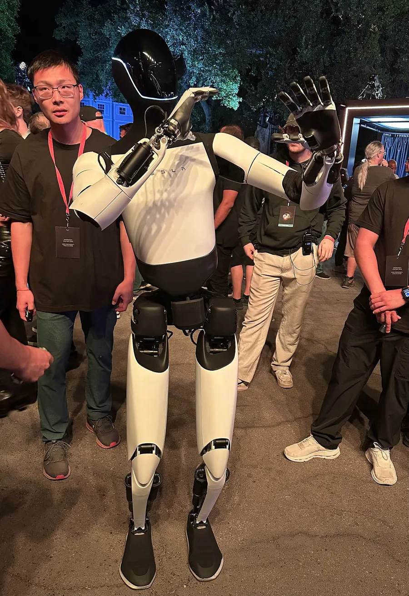

Demo y producto · despliegues con cifras
Lo que se ha desplegado y lo que cada empresa cuenta de ello
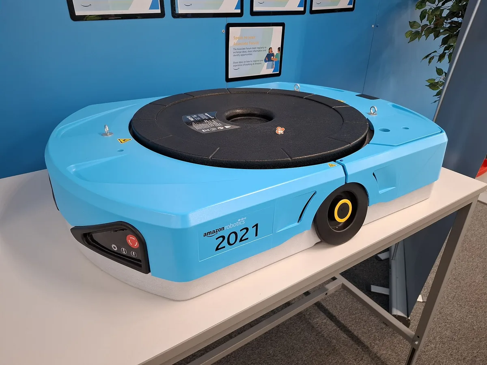

Demo y producto · leer un anuncio con sus cifras
Figure en BMW: 90 000 piezas en 1250 h son 150 s por ciclo, no 84
Script: ejemplos_r1a.py, apartado 8.
Demo y producto · el filtro de M0
El filtro de credibilidad de M0, aplicado a cuatro anuncios de 2026
| Pregunta de M0 | Gemini Robotics 2.5 (11-2026) | GEN-1 (04-2026) | Helix 2.5 (09-2026) | GR00T N1.7 (04-2026) |
|---|---|---|---|---|
| ¿Hardware real? | sí, y piloto en fábrica | sí | sí, 30 casas | latencias en la GPU del robot; tareas sin detallar |
| ¿Ensayos y fallos? | tasas sin \(n\) | medias y rachas sin \(n\) | a ciegas, sin \(n\) | mejora sin \(n\) |
| ¿Latencia y Hz? | no | no | no | sí, medidas con método |
| ¿Contra qué compara? | Gemini Robotics 2 | GEN-0, π0, desde cero | desde cero, Helix 02 | N1.6 |
| ¿Código y pesos? | no | no | no | sí |
| ¿Quién lo evalúa? | la empresa | la empresa | la empresa | la empresa; reproducible |
Fuentes: . El más reproducible es el único que publica pesos y latencias; el que más promete es el que menos deja comprobar.
Parte 6
Conducción autónoma: el caso más maduro
El único sector con despliegue masivo de autonomía aprendida bajo observabilidad parcial. Waymo con sus cifras, su arquitectura, su comparación de seguridad y su recall; Apollo Go y Wayve; y qué se puede llevar un dron.
Conducción · Waymo en cifras
Waymo: 271 millones de millas sin conductor y quince ciudades
- Millas sin nadie al volante hasta junio de 2026: 271,3 M (Phoenix 92,1; Bahía de San Francisco 82,4; Los Ángeles 67,1; Austin 21,1; Atlanta 8,6) .
- Viajes: más de 400 000 de pago por semana en seis áreas en febrero de 2026 ; 500 000 en diez ciudades a finales de marzo (prensa contrastada) . 15 millones de viajes en 2025.
- Ciudades y dinero: 16 000 M$ a 126 000 M$ de valoración (02-2026) ; la decimoquinta ciudad de EE. UU. en septiembre de 2026 .
- 6.ª generación sin conductor desde el 12-02-2026, con menos de la mitad de cámaras que la 5.ª .
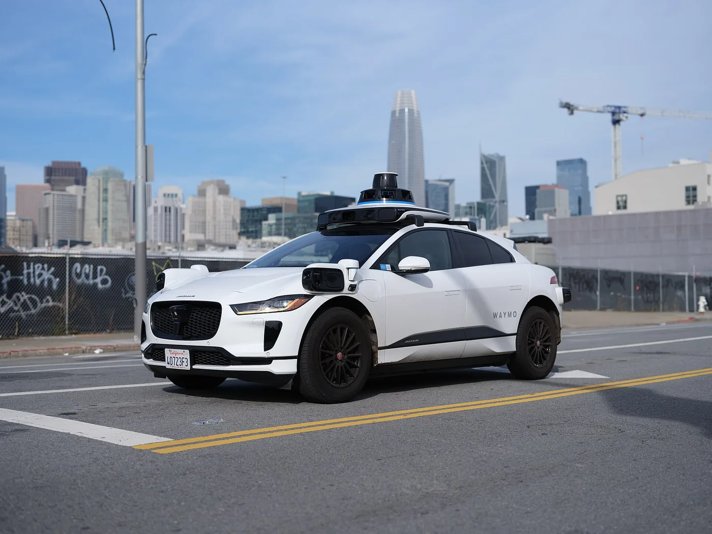
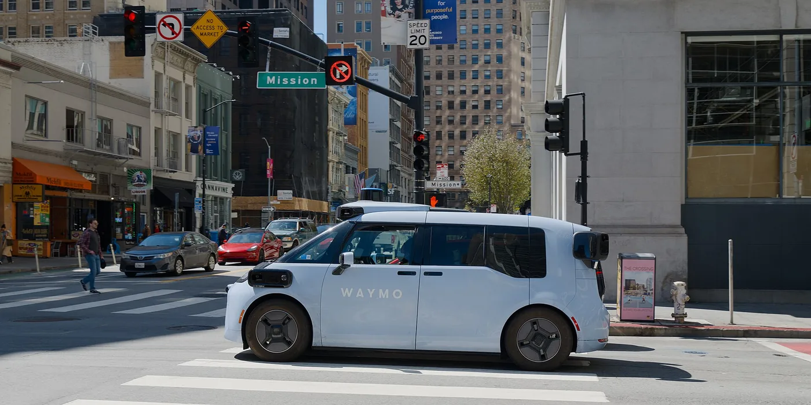


Conducción · Waymo por dentro
Un modelo rápido y uno lento, un profesor grande y un alumno en el coche
- Los modelos «profesor» no caben en el coche: se destilan en «alumnos» pequeños, y una capa de validación separada comprueba cada trayectoria .
- A bordo: un chip propio de 5 nm con más de 1000 TOPS, 13 cámaras de alta resolución y un cómputo «designed like two independent engines» (según Waymo).
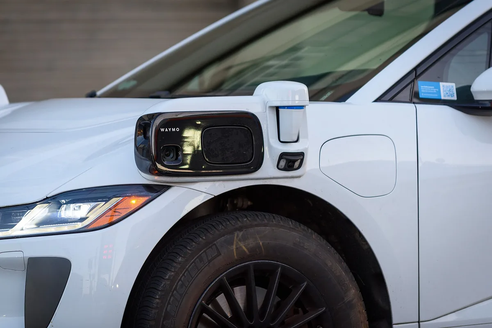

Conducción · leer la seguridad · derivación
Tres lesiones graves en 271 millones de millas: el intervalo exacto de Poisson
| # | Paso | Por qué |
|---|---|---|
| 1 | \(x \sim \mathrm{Poisson}(\mu)\), \(\mu = \lambda M\) | eventos raros e independientes en \(M\) millones de millas |
| 2 | \(\mu_U\): \(P(X \le x \mid \mu_U) = \alpha/2\) | con más \(\mu\), ver tan pocos sería raro |
| 3 | \(\mu_L\): \(P(X \ge x \mid \mu_L) = \alpha/2\) | con menos \(\mu\), ver tantos sería raro |
| 4 | \(\mu_L = \tfrac12\chi^2_{\alpha/2,\,2x}\), \(\mu_U = \tfrac12\chi^2_{1-\alpha/2,\,2x+2}\) | la cola de la Poisson es una \(\chi^2\) (o bisección) |
| 5 | \(\lambda \in [\mu_L/M,\ \mu_U/M]\) | se pasa de eventos a tasa |
| 6 | \(RR = \lambda/\lambda_h\) | razón frente a la tasa humana de referencia |
\(x\): eventos de Waymo; \(M\): millones de millas; \(\lambda\): tasa por millón de millas; \(\mu\): eventos esperados; \(\lambda_h\): tasa humana; \(RR\): razón de tasas.
Ejemplo (lesión grave o peor, datos a junio de 2026 ): la tasa publicada, 0,01106 por millón de millas, por \(M = 271{,}3\) da \(x = 3\) eventos.
\(\mu \in [0{,}619;\ 8{,}767]\), así que \(\lambda \in [0{,}00228;\ 0{,}0323]\) por millón de millas.
Script: ejemplos_r1a.py, apartado 7.
Conducción · leer la seguridad · resultado
La reducción es grande y significativa; el intervalo, ancho; la referencia, ajustada
- Lesión grave: −94,8 %, con un intervalo de −99,2 % a −83,2 % según Waymo. Tratando la tasa humana como conocida, el curso obtiene [−98,9 %; −84,9 %]: casi lo mismo, porque la referencia (miles de eventos) apenas añade incertidumbre.
- Peatones: 7 frente a 93 esperados; la razón queda entre 0,030 y 0,155.
- La referencia se ajusta a dónde conduce Waymo, quita autopistas y solo en «cualquier lesión» corrige un 32 % de accidentes no denunciados.
- Aun con cero lesiones graves, acotar la tasa por debajo del 10 % de la humana pediría unos 141 M de millas (regla del tres por distancia, en R1b).
Conducción · el recall 25E084
Un cambio en la predicción de otros agentes y 3067 coches que pasaban autobuses escolares
- Qué pasaba: parado ante un autobús escolar con las luces o el brazo de STOP, el coche arrancaba antes de tiempo .
- Por qué: la versión del 20-08-2025 «included changes to the method for predicting the intended behavior of other agents»; el sistema llegaba a creer que estorbaba a un vehículo prioritario y avanzaba para dejarle paso.
- Cómo se vio: por vigilancia de la flota y por el aumento de casos; se corrigió a todos entre el 05 y el 17-11-2025.
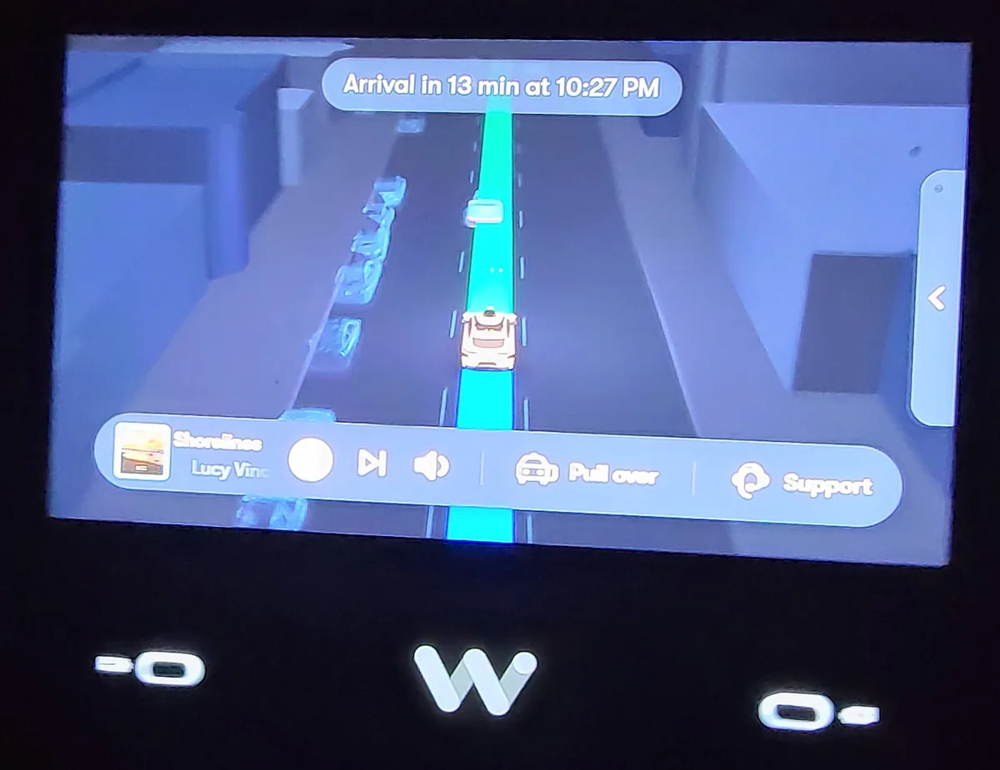

Conducción · Apollo Go y Wayve
Apollo Go mide en kilómetros y viajes; Wayve, en ciudades sin mapa
- Apollo Go (Baidu): 3,2 M de viajes sin conductor en el primer trimestre de 2026, con un pico de más de 350 000 por semana en marzo, y más de 22 M acumulados en abril . En agosto: 28 ciudades, más de 240 M de km sin conductor y servicio sin conductor en Dubái .
- Su nota del segundo trimestre ya no da viajes. 240 M de km son 149 M de millas: frente a las 271 M de Waymo, pero sin una comparación de seguridad con método publicado.
- Wayve: conducción de extremo a extremo con cámaras y sin mapas de alta definición; dice haber conducido sin ajuste en más de 500 ciudades y entrenar con datos de más de 70 países . Desde el 03-09-2026 lleva pasajeros de Uber en Londres, con conductor de seguridad . Su world model, GAIA-2, está en A8b.
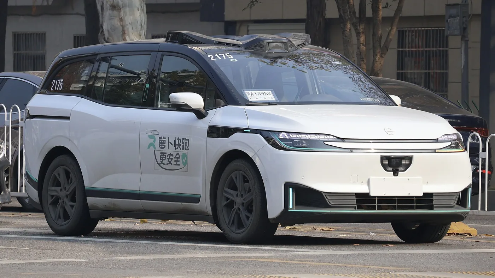
_Apollo_Go_Apollo_RT6_Temporary-%E9%84%82A1395%E8%AF%95_2025-12-17.jpg){kind=link}
Conducción · y el dron
Lo que un dron puede copiar de la conducción autónoma y lo que no
| Pieza | Se puede copiar | No se puede copiar (todavía) |
|---|---|---|
| Arquitectura | un nivel rápido y uno lento; destilar un profesor grande en un alumno pequeño | más de 1000 TOPS con refrigeración líquida del coche |
| Seguridad | una validación independiente de la red que genera la trayectoria (A14) | parar en el arcén: un dron que duda no puede quedarse quieto en el aire sin gastar energía |
| Datos | world model para casos raros; registros de flota para buscar fallos | 271 M de millas con sensores: ninguna flota de drones publica algo parecido |
| Evaluación | tasas por exposición con intervalos exactos y referencia ajustada | una referencia humana con millones de eventos registrados por la policía |
| Regulación | recalls y avisos públicos como fuente de fallos (C7) | el marco: en drones es otro (EASA, FAA), y lo cuenta R1b |
Parte 7
Y los drones, ¿dónde están en estos labs?
Casi ausentes. Por qué, y dónde está la autonomía aérea que sí vuela: en R1b.
¿Y los drones? · ausencia y motivos
Ninguno de los grandes labs publica un modelo para drones; las razones son medibles
- Ni Gemini Robotics 2 ni 2.5 mencionan robots aéreos ; tampoco el anuncio de NVIDIA de GTC 2026 ni las plataformas de π0.7 . Lo más cerca: CrossFormer voló un Tello sin datos de cuadricóptero (A12b) .
- Datos: OXE, DROID y AgiBot World son de manipulación; no hay flotas de teleoperación aérea (parte 2).
- Riesgo y evaluación: los 356 ensayos por política de la parte 4 son 356 vuelos; un fallo no tira una taza, estrella el dron.
- Latencia y cómputo: un modelo de 3000 M tarda 149 ms en un Jetson Orin y 76,8 ms en un Thor de 40–130 W ; el lazo de rate de un multirrotor va a cientos o miles de hercios (M0). La energía de llevar ese cómputo, en R1b.
Hacia dónde va
Lo que probablemente veremos en 2027 (previsiones, no hechos)
- Más datos humanos y menos de robot en la base: GEN-1 ya preentrena sin datos de robot , y NVIDIA y Figure compran vídeo egocéntrico a escala .
- World models como simulador y como examen: Waymo, 1X y Google DeepMind ya los usan ; GR00T 2 (09-11-2026) ya es un «world action model», que predice a la vez el vídeo futuro y las acciones .
- Humanoides con cliente: 25 000 Atlas planeados por Hyundai, Digit 5 a finales de 2027, Figure fabricando uno por hora .
Conexión con la tesis
Qué haría falta para que tu resultado fuera creíble con las varas de hoy
Tu pirámide
Base: tu simulador en JAX (millones de episodios). Medio: escenas reales reconstruidas (T1b). Cima: registros públicos de PX4. Publica cuántos y de dónde, como DROID.
Con su \(n\)
Del orden de 356 episodios por variante para separar 10 puntos; Wilson en cada tasa; regla del tres si no hay fallos; semillas y escenarios fijados antes, y comparación a ciegas si alguien puntúa.
Medida en el hardware
Como el README de GR00T: mediana de muchas llamadas, en la GPU que llevaría el dron, y la frecuencia que de verdad sale. El belief en el nivel lento.
Que se pueda repetir
Código, pesos y entornos públicos. Hoy eso te pone, en drones, por delante de los grandes labs.
Resumen
Lo que te llevas de R1a
La hora de persona manda
Teleoperar rinde 35 demostraciones por hora; UMI, 111; la mano, 231. 10 000 demostraciones teleoperadas: unas 290 h y 10 000 US$ con supuestos. El único cómputo publicado (GR00T N1): unas 50 000 h de H100. GR00T N1.7 tarda 149 ms en un Orin y 77 ms en un Thor.
Sin \(n\) no hay dato
356 ensayos por política para separar 60 % de 70 %; «20 de 20» garantiza un 86 %; un «96 %» sin \(n\) cabe entre 0,81 y 0,99. TRI y RoboArena enseñan cómo evaluar en serio; los blogs de 2026 no dan \(n\).
Demo, piloto, producto
Teleoperación declarada (1X) o descubierta (Tesla); despliegues con cifras incompletas (Figure, Agility). Waymo: 271 M de millas, intervalos que se pueden reproducir y un recall que enseña observabilidad parcial. Los drones, casi ausentes: R1b.
Autoevaluación · 1 de 3
Datos y cómputo
1. Recoges datos teleoperando a 35 demostraciones por hora con 10 puestos. Si pasas a 20 puestos, ¿qué cambia?
\(D = N/(rRh)\) baja a la mitad, pero \(H_{\mathrm{op}} = N/r\) no depende de \(R\): paralelizar acorta el calendario, no la factura de operadores (sí sube el equipo a amortizar).
2. GR00T N1.7 tarda 149 ms en un Jetson Orin. El robot ejecuta acciones a 50 Hz. ¿Cuántas acciones del trozo hay que ejecutar como mínimo antes de pedir el siguiente?
\(N_{\mathrm{ejec}} \ge \delta f_a = 0{,}149 \cdot 50 = 7{,}45\): al menos 8. Si se ejecutan menos, el robot se queda sin acciones antes de que llegue el trozo nuevo.
Autoevaluación · 2 de 3
Evaluación
3. Una política acierta 30 de 30. ¿Qué tasa de éxito puedes garantizar al 95 %?
\(p_L = 0{,}05^{1/30} = 0{,}905\); la regla del tres da \(1 - 3/30 = 0{,}90\). Para garantizar el 99 % harían falta 299 aciertos seguidos.
4. Para separar 60 % de 70 % hacen falta unos 356 ensayos por política. ¿Cuántos, aproximadamente, para separar 60 % de 80 % (misma \(\alpha\) y potencia)?
\(n \propto 1/\Delta^2\): con el doble de diferencia, unas cuatro veces menos. La fórmula exacta da 81 (las varianzas también cambian un poco).
Autoevaluación · 3 de 3
Leer la realidad
5. Waymo tiene 3 lesiones graves en 271,3 M de millas y la referencia humana, 0,213 por millón. ¿Por qué el intervalo de su reducción (de −99 % a −83 %) es tan ancho?
Con \(x = 3\), \(\mu \in [0{,}62;\ 8{,}77]\): la tasa puede ser 14 veces mayor que la mínima. La referencia tiene miles de eventos y aporta poca incertidumbre; el método es exacto, no normal.
6. Pregunta abierta: diseña la evaluación de tu política de búsqueda con belief para que pase el filtro de credibilidad de M0.
Ver respuesta
Una respuesta razonable. Fija antes la métrica (éxito en encontrar el objetivo en un tiempo máximo y tiempo hasta encontrarlo), los escenarios y las semillas. Compara con líneas base fuertes (una política con memoria recurrente sin belief explícito y un planificador clásico) en el mismo simulador. Usa del orden de 350 episodios por variante si quieres separar 10 puntos, y da cada tasa con su intervalo de Wilson; si una variante no falla nunca, da su cota por la regla del tres. Mide la latencia del modelo en la GPU que llevaría el dron (mediana de muchas llamadas) y di a qué frecuencia decide. Si alguien puntúa a mano, que no sepa qué política mira y en orden aleatorio, como TRI. Valida en registros reales (T1b) o en unos pocos vuelos, sabiendo que esos pocos vuelos solo sirven para descartar sorpresas grandes. Publica código, pesos, escenarios y los fallos descritos.
Lecturas guiadas
Tres lecturas esenciales y por dónde entrarles
TRI, «A careful examination of large behavior models»
Lee: la sección de evaluación (protocolo ciego, rúbricas, estadística) y los resultados agregados.
Busca: cuándo el preentrenamiento ayuda con significación y cuándo no.
Responde: ¿cuántas tareas y ensayos necesitarías tú para afirmar algo parecido de tu dron?
RoboArena
Lee: cómo se recogen las preferencias por parejas y el modelo de Bradley–Terry ampliado.
Busca: por qué comparar en la misma escena reduce los ensayos necesarios.
Responde: ¿se podría montar una «arena» de políticas de drones en simulación? ¿Qué haría de escena?
Hub de seguridad de Waymo y el recall 25E084
Lee: las notas de método del hub y las cuatro páginas del recall.
Busca: qué ajustes lleva la referencia humana y qué cambio del software causó el fallo.
Responde: ¿qué vigilarías en una flota de drones después de cada versión?
Para profundizar: la pirámide y el cómputo de GR00T N1 ; DROID ; UMI ; buenas prácticas de evaluación ; el world model de 1X como evaluador ; π0.7 .
Laboratorio
Audita los datos y las afirmaciones de un lab
Unas 3 h, solo CPU y sin cuentas. Enunciado en lab/README.md.
- Datasets: lee solo los metadatos de seis conjuntos en formato LeRobot del Hugging Face Hub (DROID, ALOHA, Bridge, Fractal, LIBERO): episodios, horas, fps, dimensión de acción. Tabla y figura de escalas.
- Estadística: Wilson, potencia y regla del tres para tres resultados publicados con su \(n\).
- Vídeos: aplica la lista de seis preguntas a dos vídeos oficiales de 2025–2026 y escribe tu veredicto.
- Waymo: reproduce los intervalos de Poisson del hub.
Figuras: figuras/figuras_r1a.py; cuentas: figuras/ejemplos_r1a.py; cifras y fuentes: figuras/datos/cifras.json.
Referencias · 1 de 4
Referencias
- Levine, S., Pastor, P., Krizhevsky, A., Quillen, D. (2016). Learning hand-eye coordination for robotic grasping with deep learning and large-scale data collection. Versión ampliada del artículo de ISER 2016. arXiv:1603.02199
- Kalashnikov, D., Irpan, A., Pastor, P., Ibarz, J., et al. (2018). QT-Opt: Scalable deep reinforcement learning for vision-based robotic manipulation. arXiv:1806.10293
- Brohan, A., Brown, N., Carbajal, J., Chebotar, Y., Dabis, J., Finn, C., et al. (2023). RT-1: Robotics transformer for real-world control at scale. Robotics: Science and Systems XIX. doi:10.15607/RSS.2023.XIX.025. arXiv:2212.06817
- Zhao, T. Z., Kumar, V., Levine, S., Finn, C. (2023). Learning fine-grained bimanual manipulation with low-cost hardware. Robotics: Science and Systems XIX. doi:10.15607/RSS.2023.XIX.016. arXiv:2304.13705
- Open X-Embodiment Collaboration (O'Neill, A., Rehman, A., Maddukuri, A., et al.) (2024). Open X-Embodiment: Robotic learning datasets and RT-X models. ICRA 2024, 6892–6903. doi:10.1109/ICRA57147.2024.10611477. arXiv:2310.08864 (CC BY 4.0)
- Khazatsky, A., Pertsch, K., Nair, S., et al. (2024). DROID: A large-scale in-the-wild robot manipulation dataset. Robotics: Science and Systems XX. doi:10.15607/RSS.2024.XX.120. arXiv:2403.12945 (CC BY 4.0)
- Chi, C., Xu, Z., Pan, C., Cousineau, E., Burchfiel, B., Feng, S., Tedrake, R., Song, S. (2024). Universal Manipulation Interface: In-the-wild robot teaching without in-the-wild robots. arXiv:2402.10329
- Black, K., Brown, N., Driess, D., Esmail, A., Equi, M., Finn, C., et al. (2024). π0: A vision-language-action flow model for general robot control. arXiv:2410.24164 (v4, 8 de enero de 2026)
- Bloomberg (14 de octubre de 2024). Tesla's Optimus robots were remotely operated at Cybercab event. bloomberg.com (prensa; de pago, leídos el titular y el resumen)
- Bellan, R. (14 de octubre de 2024). Tesla Optimus bots were controlled by humans during the 'We, Robot' event. TechCrunch. techcrunch.com (prensa)
- NVIDIA: Bjorck, J., Castañeda, F., Cherniadev, N., et al. (2025). GR00T N1: An open foundation model for generalist humanoid robots. arXiv:2503.14734 (informe técnico; CC BY 4.0)
- Amazon (30 de junio de 2025). Amazon deploys over 1 million robots and launches new AI foundation model. aboutamazon.com (afirmaciones de la empresa)
- TRI LBM Team (Barreiros, J., Beaulieu, A., et al.; 82 autores) (2025). A careful examination of large behavior models for multitask dexterous manipulation. arXiv:2507.05331 (preprint)
- Figure AI (19 de noviembre de 2025). F.02 contributed to the production of 30,000 cars at BMW. figure.ai/news (afirmaciones de la empresa)
- Waymo (2 de febrero de 2026). Accelerating our global growth: Waymo raises $16 billion investment round. waymo.com/blog (afirmaciones de la empresa)
- Jiang, C. M., Masotto, X., Sun, B. (6 de febrero de 2026). The Waymo World Model: A new frontier for autonomous driving simulation. Blog de Waymo (afirmaciones de la empresa)
- Boston Dynamics (5 de enero de 2026). Boston Dynamics unveils new Atlas robot to revolutionize industry. bostondynamics.com (afirmaciones de la empresa)
- Physical Intelligence, Ai, B., Amin, A., Aniceto, R., Balakrishna, A., Balke, G., Black, K., Bokinsky, G., et al. (2026). π0.7: A steerable generalist robotic foundation model with emergent capabilities. arXiv:2604.15483 (v2, 24 de abril de 2026; preprint)
Referencias · 2 de 4
Referencias
- NVIDIA. Isaac-GR00T: README (GR00T N1.7, versión de disponibilidad general; commit 3b49067, 10 de noviembre de 2026) y
scripts/deployment/README.md, «Benchmark Results» (commit 8af93e5, 6 de noviembre de 2026). github.com/NVIDIA/Isaac-GR00T (código Apache-2.0; medidas del fabricante con su método) - Parada, C. (30 de julio de 2026). Gemini Robotics 2 brings whole-body intelligence to robots. Blog de Google DeepMind (afirmaciones de la empresa)
- Parada, C. (10 de noviembre de 2026). Gemini Robotics 2.5: Accelerating physical intelligence. Blog de Google DeepMind (afirmaciones de la empresa)
- Wayve (3 de septiembre de 2026). Wayve and Uber launch first-ever autonomous rides in the UK. wayve.ai/press (afirmaciones de la empresa)
- NVIDIA (16 de marzo de 2026). NVIDIA and global robotics leaders take physical AI to the real world. nvidianews.nvidia.com (afirmaciones de la empresa)
- Generalist (2 de abril de 2026). GEN-1: Scaling embodied foundation models to mastery. generalistai.com/blog (afirmaciones de la empresa)
- Skild AI (14 de enero de 2026). Announcing Series C; y (24 de septiembre de 2025) The case for an omni-bodied robot brain. skild.ai/blogs (afirmaciones de la empresa)
- Physical Intelligence. openpi: README con los modelos publicados («[Sept 2025] We released pi05»), consultado el 12 de noviembre de 2026. github.com/Physical-Intelligence/openpi (Apache-2.0)
- Llontop, E., Vadrevu, K. (17 de abril de 2026). NVIDIA Isaac GR00T N1.7: Open reasoning VLA model for humanoid robots. Blog de NVIDIA en Hugging Face (afirmaciones de la empresa)
- Meta AI (11 de junio de 2025). Introducing the V-JEPA 2 world model and new benchmarks for physical reasoning. ai.meta.com/blog (el artículo, en A8b)
- AgiBot World Contributors, Bu, Q., et al. (2025). AgiBot World Colosseo: A large-scale manipulation platform for scalable and intelligent embodied systems. arXiv:2503.06669 (v5, 20 de octubre de 2026); y el README de OpenDriveLab/AgiBot-World (CC BY-NC-SA 4.0)
- Figure AI (17 de septiembre de 2026). Helix 2.5: Zero-shot 30-home generalization. figure.ai/news (afirmaciones de la empresa)
- Atreya, P., Pertsch, K., Lee, T., Kim, M. J., Jain, A., Kuramshin, A., et al., Levine, S. (2025). RoboArena: Distributed real-world evaluation of generalist robot policies. CoRL 2025, PMLR 305, 336–364. arXiv:2506.18123 (CC BY 4.0)
- Boston Dynamics and TRI Research Team (Cousineau, E., Kuindersma, S., Manuelli, L., Marion, P., et al.) (20 de agosto de 2025). Large behavior models and Atlas find new footing. bostondynamics.com (afirmaciones de las empresas)
- Boston Dynamics (5 de enero de 2026). Boston Dynamics & Google DeepMind form new AI partnership to bring foundational intelligence to humanoid robots. bostondynamics.com
- Boston Dynamics (21 de septiembre de 2026). Boston Dynamics opens Robotics Metaplant Application Center to train humanoid robots for manufacturing tasks. bostondynamics.com (afirmaciones de la empresa)
- Apptronik (11 de febrero de 2026). Apptronik closes over $935 million Series A. apptronik.com (afirmaciones de la empresa)
- China Daily, reproducido en la web de la Bolsa de Shanghái (agosto de 2026). Unitree IPO draws spotlight to China's fast-growing humanoid robot sector. english.sse.com.cn (cifras del folleto de la salida a bolsa)
Referencias · 3 de 4
Referencias
- NVIDIA (31 de mayo de 2026). NVIDIA announces NVIDIA Isaac GR00T reference humanoid robot for academic research. nvidianews.nvidia.com (afirmaciones de la empresa)
- Fu, Z., Zhao, T. Z., Finn, C. (2024). Mobile ALOHA: Learning bimanual mobile manipulation with low-cost whole-body teleoperation. arXiv:2401.02117
- Hoque, R., Huang, P., Yoon, D. J., Sivapurapu, M., Zhang, J. (2025). EgoDex: Learning dexterous manipulation from large-scale egocentric video. arXiv:2505.11709 (v3, 9 de marzo de 2026)
- Grauman, K., et al. (2022). Ego4D: Around the world in 3,000 hours of egocentric video. CVPR 2022. arXiv:2110.07058
- Generalist (4 de noviembre de 2025). GEN-0: Embodied foundation models that scale with physical interaction. generalistai.com/blog (afirmaciones de la empresa)
- Figure AI (25 de agosto de 2026). Introducing Index: Building the world's largest and most diverse physical dataset; y (3 de septiembre de 2026) Figure and Nscale sign strategic partnership for up to 100,000 GPUs on the NVIDIA Vera Rubin platform (título del índice de noticias). figure.ai/news (afirmaciones de la empresa)
- Jang, J., Ye, S., Lin, Z., Xiang, J., Bjorck, J., et al. (2025). DreamGen: Unlocking generalization in robot learning through video world models. arXiv:2505.12705 (preprint de NVIDIA)
- Physical Intelligence: Amin, A., Aniceto, R., Balakrishna, A., et al. (2025). π*0.6: A VLA that learns from experience. arXiv:2511.14759 (preprint)
- 1X Technologies. Order NEO (página de pedido y especificaciones), consultada el 12 de noviembre de 2026. 1x.tech/order (afirmaciones de la empresa)
- 1X Technologies (10 de junio de 2025). Redwood AI. 1x.tech/discover (afirmaciones de la empresa)
- Waymo AI Team (9 de diciembre de 2025). Demonstrably safe AI for autonomous driving. Blog de Waymo (afirmaciones de la empresa)
- Gemini Robotics Team, Google DeepMind (2025). Gemini Robotics: Bringing AI into the physical world. arXiv:2503.20020 (informe técnico; preprint)
- Jeyachandran, S., Rosenband, D. (20 de agosto de 2026). A look under our trunk: What's in our compute. Blog de Waymo (afirmaciones de la empresa)
- Figure AI. Helix: A vision-language-action model for generalist humanoid control. figure.ai/news/helix (consultada el 7 de noviembre de 2026 para A12b; afirmaciones de la empresa)
- Wilson, E. B. (1927). Probable inference, the law of succession, and statistical inference. Journal of the American Statistical Association, 22(158), 209–212. doi:10.1080/01621459.1927.10502953
- 1X World Model Team (Ho, D., Monas, J., Ren, J., Yu, C.). 1X World Model: Evaluating bits, not atoms. Informe técnico sin fecha, 1x.tech (afirmaciones de la empresa)
- Kress-Gazit, H., Hashimoto, K., Kuppuswamy, N., Shah, P., Horgan, P., Richardson, G., Feng, S., Burchfiel, B. (2024). Robot learning as an empirical science: Best practices for policy evaluation. arXiv:2409.09491
- Gemini Robotics Team, Choromanski, K., Devin, C., Du, Y., Dwibedi, D., Gao, R., et al. (2025). Evaluating Gemini Robotics policies in a Veo world simulator. arXiv:2512.10675 (informe de Google DeepMind)
Referencias · 4 de 4
Referencias
- Axios (17 de octubre de 2024). Tesla Optimus humanoid robot needed human help at AI event. axios.com (prensa; leído el titular)
- Ropek, L. (16 de enero de 2024). Tesla's goofy Optimus robot underwhelmingly folds a shirt. Gizmodo. gizmodo.com (prensa)
- Blain, L. (15 de enero de 2024). Busted: Elon Musk admits new Optimus video isn't what it seems. New Atlas. newatlas.com (prensa)
- Agility Robotics (26 de octubre de 2026). GXO and Agility Robotics expand partnership to accelerate deployment of humanoids in U.S. operations; y Agility Robotics highlights commercial momentum and growing enterprise demand for Digit humanoid robot. agilityrobotics.com (afirmaciones de la empresa)
- Durham, J. (11 de agosto de 2025). Amazon builds first foundation model for multirobot coordination. Amazon Science (afirmaciones de la empresa)
- Waymo. Safety Impact: datos «Through June 2026», notas de método e intervalos de las gráficas, consultado el 12 de noviembre de 2026. waymo.com/safety/impact (datos de la empresa con método publicado)
- TechCrunch (27 de marzo de 2026). Waymo's skyrocketing ridership in one chart. techcrunch.com (prensa)
- Levin, T. (26 de marzo de 2026). Waymo has doubled its weekly ridership in under a year. InsideEVs. insideevs.com (prensa)
- Waymo (8 de octubre de 2026). Waymo closes $5 billion debt financing to accelerate business expansion. Blog de Waymo
- Waymo (12 de febrero de 2026). Beginning fully autonomous operations with the 6th-generation Waymo Driver. Blog de Waymo (afirmaciones de la empresa)
- Waymo LLC (10 de diciembre de 2025). Part 573 Safety Recall Report 25E084. National Highway Traffic Safety Administration. static.nhtsa.gov
- Baidu, Inc. (18 de mayo de 2026). Baidu announces first quarter 2026 results. Nota de prensa (PR Newswire). en.prnasia.com (afirmaciones de la empresa)
- Baidu, Inc. (18 de agosto de 2026). Baidu announces second quarter 2026 results. Nota de prensa, leída en finviz.com (la web de inversores de Baidu no se pudo abrir; afirmaciones de la empresa)
- Wayve (25 de febrero de 2026). Wayve secures $1.5B to deploy its global autonomy platform. wayve.ai/press (afirmaciones de la empresa)
- Doshi, R., Walke, H., Mees, O., Dasari, S., Levine, S. (2024). Scaling cross-embodied learning: One policy for manipulation, navigation, locomotion and aviation. CoRL 2024, PMLR 270, 496–512. arXiv:2408.11812
- Figure AI (29 de abril de 2026). Ramping Figure 03 production. figure.ai/news (afirmaciones de la empresa)
- Docca, S. (9 de noviembre de 2026). Practice makes precise: At CoRL, NVIDIA and partners reveal how robots rehearse delicate work in simulation. NVIDIA Blog. blogs.nvidia.com (afirmaciones de la empresa)
- NVIDIA (noviembre de 2026). GR00T 2: Scaling robot foundation models for generalization, dexterity, and adaptation. Informe técnico (whitepaper), §2, §3.1, §4.2, §4.5, §4.6.1, Fig. 19 y §5. research.nvidia.com/labs/gear/gr00t-2 (consultado el 12-11-2026; latencias medidas con su método; datos y resultados, afirmaciones de la empresa)